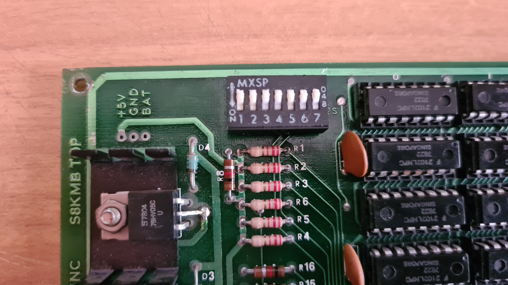
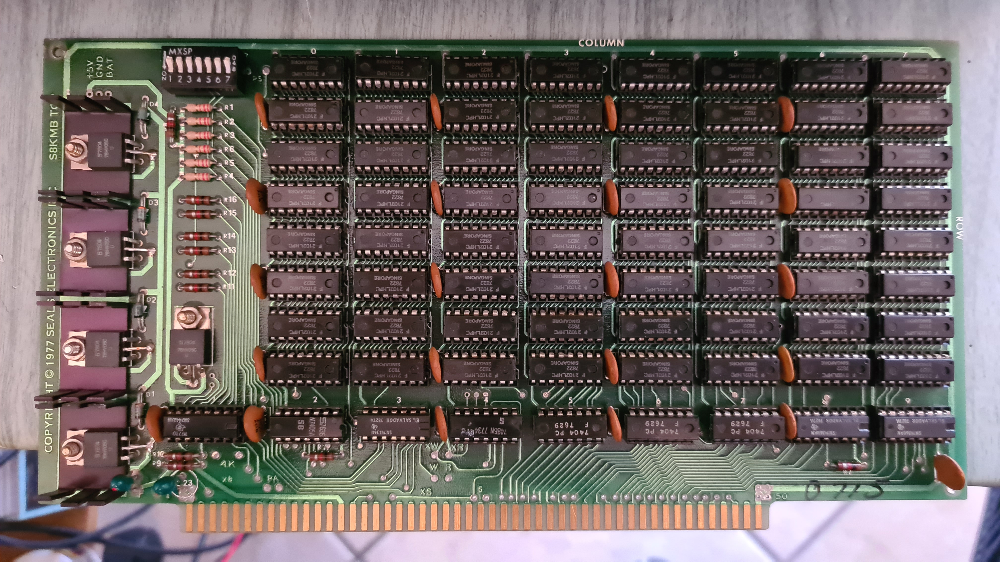
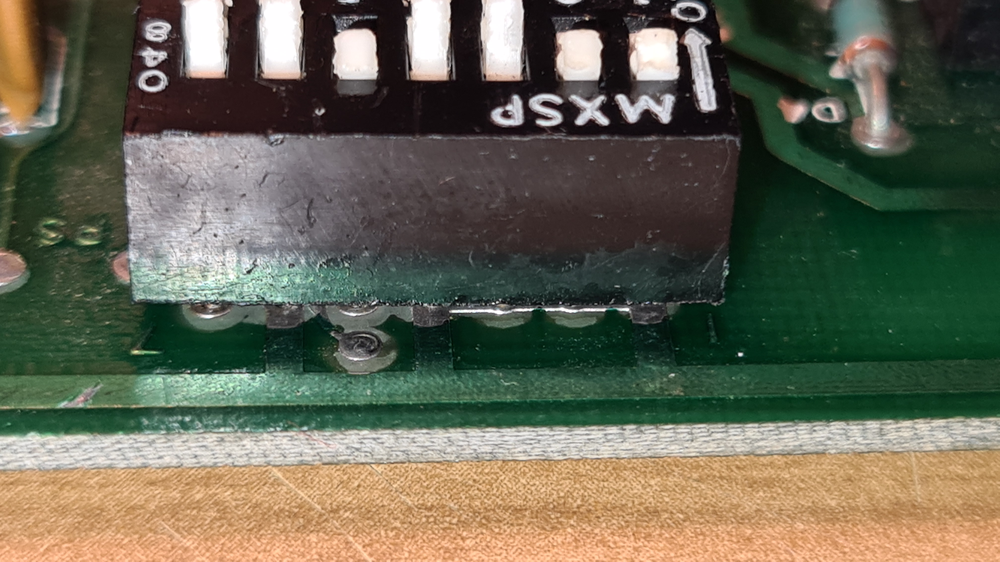
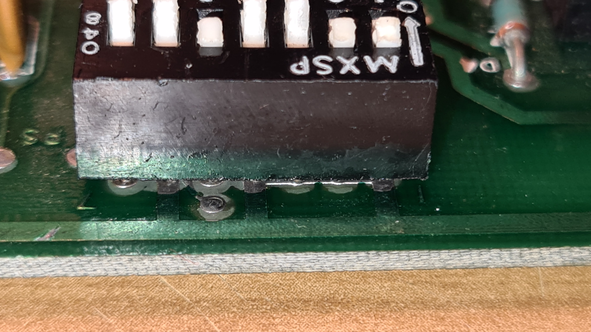
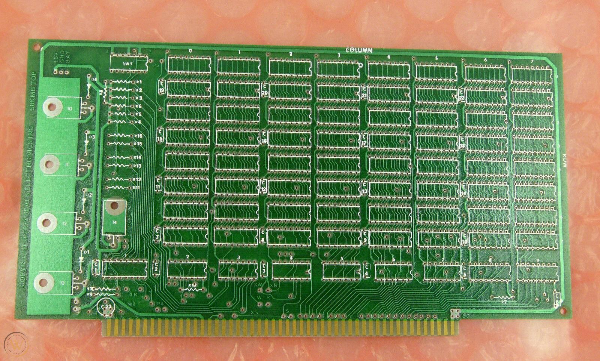
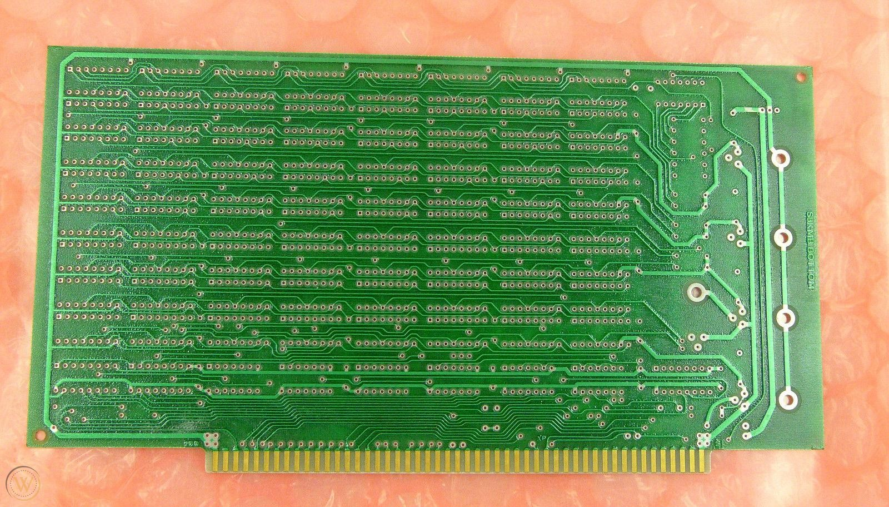

INFO REQUIRED ABOUT SEALS ELECTRONICS S8KMB - 8 KB RAM EXPANSION BOARD FOR S100 SYSTEMS
LOOKING FOR INFO / CONFIGURATION / SCHEMATIC -- email at the bottom of the page
This board differs from the classic 8K-SC board.
It has 7 dip-switches instead of 8, also the layout is different.
ICs from left to right appears to be: U1=7442, U2=7405, U3=74136, U4=7486, U5=7404, U6=7404, U7=7404, U8=74368, U9=74368.
Here follows some picture. Click or download them for high-res.
 

 

BARE PCB: (source: internet)
 
For this specific model of RAM card there seems to be no documentation online.
Any information is welcome. If you know something about this board please write to the email below, thank you!